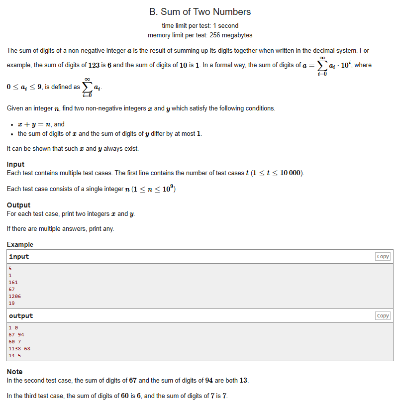

Problem
Given $n \le 10^9$, find $x, y \ge 0$ with $x + y = n$ and $|S(x) - S(y)| \le 1$, where $S$ is digit sum. Up to $10^4$ tests.
Why brute force fails
Looping $x$ from $0$ to $n/2$ is $O(n)$ per test. With $t = 10^4$ and $n = 10^9$, that's $10^{13}$ ops. Need to think in digits, not magnitude.
Key fact
Split $n$ digit by digit: pick $x_i, y_i \in [0,9]$ with $x_i + y_i = n_i$. No carries, so
(Each carry subtracts $9$ from the digit sum total. No carries, no loss.)
The total is fixed. So the question becomes: how do we split each digit so $S(x)$ and $S(y)$ end up balanced?
The split
For digit $d$, the best you can do alone is $\lceil d/2 \rceil$ vs $\lfloor d/2 \rfloor$. Even digits split evenly. Odd digits leave a $\pm 1$ imbalance.
If every odd digit's bigger half goes to $x$, the imbalance can hit $10$. Alternate instead: flip which side gets the bigger half each time you see an odd digit. Imbalance stays in $\{-1, 0, 1\}$.
Trace, $n = 1206$
| digit | $x$ | $y$ | sign |
|---|---|---|---|
| 1 | 1 | 0 | flip |
| 2 | 11 | 1 | |
| 0 | 110 | 10 | |
| 6 | 1103 | 103 |
$1103 + 103 = 1206$. $S(1103) = 5$, $S(103) = 4$.
Code
#include <bits/stdc++.h>
using namespace std;
// accepted in 46ms
int main() {
int t; scanf("%d", &t);
while (t--) {
long long n; scanf("%lld", &n);
string s = to_string(n);
long long x = 0, y = 0;
int sign = 1;
for (char c : s) {
int d = c - '0', big = (d+1)/2, small = d/2;
if (d % 2 == 0) { x = x*10+big; y = y*10+small; }
else if (sign == 1) { x = x*10+big; y = y*10+small; sign = -1; }
else { x = x*10+small; y = y*10+big; sign = 1; }
}
printf("%lld %lld\n", x, y);
}
}Complexity
$O(\log n)$ per test, $O(t \log n)$ total. About $10^5$ ops worst case.